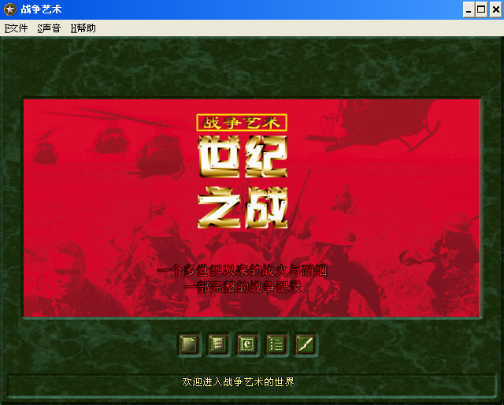
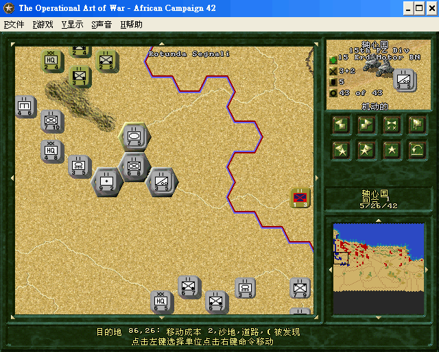

名稱：戰爭藝術：世紀之戰 (The Operational Art Of War: Century Of Warfare，簡中版)
簡介：Norm Koger 2000年出品的即時戰術遊戲，由TalonSoft代理發行，2002年由世紀雷神
簡中化並代理發行 [待補]。


保護：光碟，破解碼：
OPART 300 CW.EXE
FA FF 85 C0 75 24
-- -- -- -- EB --